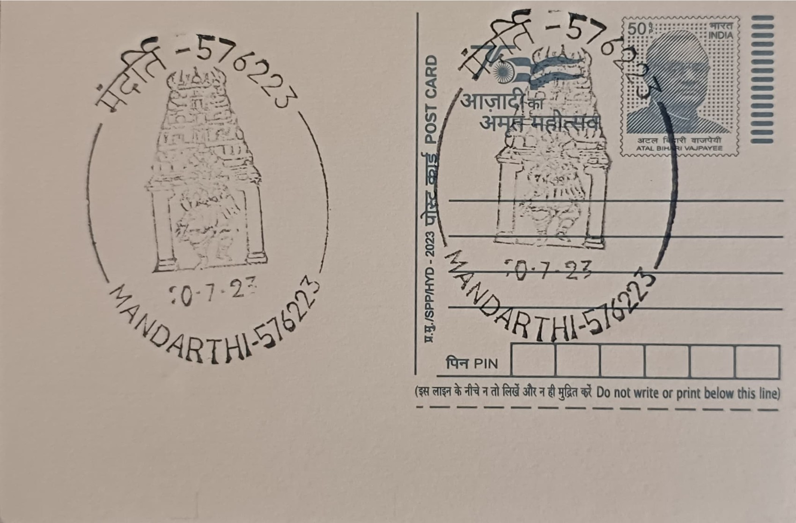

Yakshagana of Mandarthi
ಮಂದಾರ್ತಿಯ ಯಕ್ಷಗಾನ


The term Yakshagana derives from "yaksha" (a celestial or nature spirit of Hindu mythology) and "gana" (song), broadly translating to "song of the yaksha." Scholars trace the art form's roots to between the eleventh and sixteenth centuries, with one tradition crediting the Vaishnava saint Narahari Tirtha, active in Udupi around 1300 CE, with founding an early Dasavatara Ata troupe under the influence of the Bhakti movement. By around 1600, the poet Parthisubba had composed Yakshagana versions of the Ramayana and is credited with shaping the Tenkutittu, or southern, performance style that is still practised across Udupi and Dakshina Kannada, including at Mandarthi.
Yakshagana is classified as a folk theatre form unique to coastal Karnataka and parts of Kasaragod in Kerala, blending dance-drama, devotional music, costume, and extempore verse dialogue drawn chiefly from the Mahabharata, Ramayana, and Puranas. Its significance at Mandarthi is inseparable from the Sri Durgaparameshwari Temple, where performances are typically offered as "harake seva," a thanksgiving ritual in which a devotee who has taken a vow before the deity sponsors a troupe's show once the wish is fulfilled. This vow-based patronage, rather than ticketed entertainment, has historically sustained troupes attached to major shrines such as Kateel, Dharmasthala, and Mandarthi, embedding the art form directly into the region's religious economy.
The performance ensemble divides into the himmela, the musicians, and the mummela, the dancer-actors. The himmela is led by a Bhagavata, a vocalist-narrator regarded as the production's conductor and sometimes called the "first actor," accompanied by the maddale (a double-headed hand drum), the loud chande drum that drives the rhythm of entrances and battle sequences, and often a harmonium. Costumes include a tall carved and gilded headdress known as the kirita or pagade, a chest ornament called the kavacha, shoulder armlets termed bhuja-kirti, and broad decorated belts, traditionally built from light wood, mirrors, and gold foil, paired with elaborate facial makeup whose colours and patterns signal a character's moral nature, from noble kings to demons.
A distinguishing feature of the Mandarthi tradition is its grounding in local legend: one account links the place name to five mythic serpent-princesses, among them Mandarathi, said to have been transformed and later venerated near the temple tank, giving the goddess and the settlement their name. Harake performances at Mandarthi follow the regional Yakshagana calendar, running through the dry season from roughly November to May, after which troupes disperse and performers return to other occupations until the next season; on a touring night a mela may stage an all-night show, moving between villages to honour accumulated vows, a pattern documented across the Kateel-Mandarthi belt of Udupi district.
The temple currently maintains its own resident mela alongside several touring harake melas that travel through the district fulfilling devotee bookings, a structure that has kept demand for performers steady even as urban migration draws young men away from traditional livelihoods. Training is reinforced through seasonal children's festivals and dedicated schools in the wider Udupi region, such as the Yakshagana Kendra and youth programmes organised by local trusts, which recruit working artists to coach students over several months each year. Mandarthi's troupes remain booked chiefly through temple-linked vow fulfilment rather than public ticket sales, a arrangement that ties the art form's survival directly to the ongoing devotional economy of the Durgaparameshwari shrine.
| Date of Introduction | October 14, 2005 |
|---|---|
| Address | Sub Postmaster, |
| Mandarthi SO, | |
| Udupi (dt.), Karnataka - 576223. |